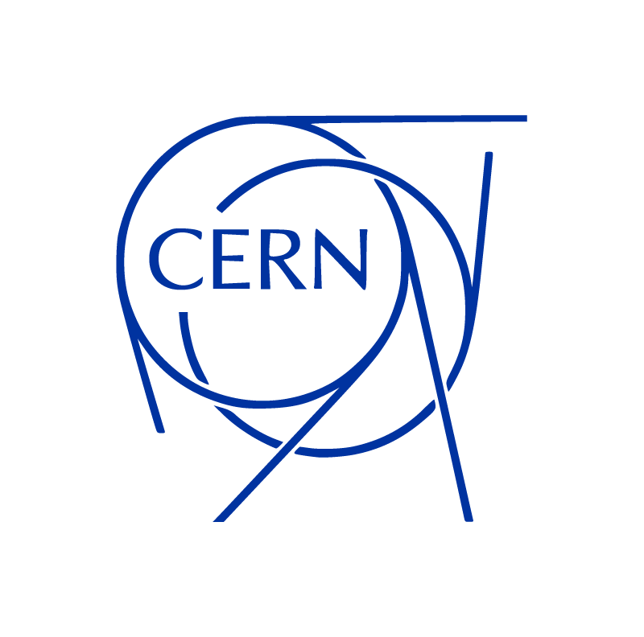

CERN 
The European Organization for Nuclear Research (CERN) was founded in 1954, the CERN laboratory sits astride the Franco-Swiss border near Geneva. It was one of Europe's first joint ventures and now has 23 member states. Physicists and engineers at CERN use the world's largest and most complex scientific instruments to study the basic constituents of matter – fundamental particles. Subatomic particles are made to collide together at close to the speed of light. The process gives us clues about how the particles interact, and provides insights into the fundamental laws of nature.
You can see CERN's location in the following map:
The instruments used at CERN are purpose-built particle accelerators and detectors. Accelerators boost beams of particles to high energies before the beams are made to collide with each other or with stationary targets. Detectors observe and record the results of these collisions [7].
What is an Accelerator?
A particle accelerator is a machine that accelerates elementary particles, such as electrons or protons, to very high energies. On a basic level, particle accelerators produce beams of charged particles that can be used for a variety of research purposes. There are two basic types of particle accelerators: linear accelerators and circular accelerators. Linear accelerators propel particles along a linear, or straight, beam line. Circular accelerators propel particles around a circular track. Linear accelerators are used for fixed-target experiments, whereas circular accelerators can be used for both colliding beam and fixed target experiments [8].

How do Accelerators Work?
Particle accelerators use electric fields to speed up and increase the energy of a beam of particles, which are steered and focused by magnetic fields. The particle source provides the particles, such as protons or electrons, that are to be accelerated. The beam of particles travels inside a vacuum in the metal beam pipe. The vacuum is crucial to maintaining an air and dust free environment for the beam of particles to travel unobstructed. Electromagnets steer and focus the beam of particles while it travels through the vacuum tube.
Electric fields spaced around the accelerator switch from positive to negative at a given frequency, creating radio waves that accelerate particles in bunches. Particles can be directed at a fixed target, such as a thin piece of metal foil, or two beams of particles can be collided. Particle detectors record and reveal the particles and radiation that are produced by the collision between a beam of particles and the target [8].
Meet CERN's Large Hadron Collider


The Large Hadron Collider (LHC) is the world’s largest and most powerful particle accelerator. It consists of a 27-kilometre ring of superconducting magnets with a number of accelerating structures to boost the energy of the particles along the way.
Inside the accelerator, two high-energy particle beams travel at close to the speed of light before they are made to collide. The beams travel in opposite directions in separate beam pipes – two tubes kept at ultrahigh vacuum. They are guided around the accelerator ring by a strong magnetic field maintained by superconducting electromagnets. The electromagnets are built from coils of special electric cable that operates in a superconducting state, efficiently conducting electricity without resistance or loss of energy. This requires chilling the magnets to ‑271.3°C – a temperature colder than outer space. For this reason, much of the accelerator is connected to a distribution system of liquid helium, which cools the magnets, as well as to other supply services.
Thousands of magnets of different varieties and sizes are used to direct the beams around the accelerator. These include 1232 dipole magnets 15 metres in length which bend the beams, and 392 quadrupole magnets, each 5–7 metres long, which focus the beams. Just prior to collision, another type of magnet is used to "squeeze" the particles closer together to increase the chances of collisions. The particles are so tiny that the task of making them collide is akin to firing two needles 10 kilometres apart with such precision that they meet halfway. [9].
LHC has four detectors:

ALICE (A Large Ion Collider Experiment) is a detector dedicated to heavy-ion physics at the Large Hadron Collider (LHC). It is designed to study the physics of strongly interacting matter at extreme energy densities, where a phase of matter called quark-gluon plasma forms.
All ordinary matter in today’s universe is made up of atoms. Each atom contains a nucleus composed of protons and neutrons (except hydrogen, which has no neutrons), surrounded by a cloud of electrons. Protons and neutrons are in turn made of quarks bound together by other particles called gluons. No quark has ever been observed in isolation: the quarks, as well as the gluons, seem to be bound permanently together and confined inside composite particles, such as protons and neutrons. This is known as confinement.
Collisions in the LHC generate temperatures more than 100,000 times hotter than the centre of the Sun. For part of each year the LHC provides collisions between lead ions, recreating in the laboratory conditions similar to those just after the Big Bang. Under these extreme conditions, protons and neutrons "melt", freeing the quarks from their bonds with the gluons. This is quark-gluon plasma. The existence of such a phase and its properties are key issues in the theory of quantum chromodynamics (QCD), for understanding the phenomenon of confinement, and for a physics problem called chiral-symmetry restoration. The ALICE collaboration studies the quark-gluon plasma as it expands and cools, observing how it progressively gives rise to the particles that constitute the matter of our universe today.
The ALICE collaboration uses the 10,000-tonne ALICE detector – 26 m long, 16 m high, and 16 m wide – to study quark-gluon plasma. The detector sits in a vast cavern 56 m below ground close to the village of St Genis-Pouilly in France, receiving beams from the LHC [10].
The LHCb experiment is situated at one of the four points around CERN’s Large Hadron Collider where beams of protons are smashed together, producing an array of different particles.
The aim of the LHCb experiment is to record the decay of particles containing b and anti-b quarks, collectively known as ‘B mesons’. The experiment’s 4,500 tonne detector is specifically designed to filter out these particles and the products of their decay.
Rather than flying out in all directions, B mesons formed by the colliding proton beams (and the particles they decay into) stay close to the line of the beam pipe, and this is reflected in the design of the detector. Other LHC experiments surround the entire collision point with layers of sub-detectors, like an onion, but the LHCb detector stretches for 20 metres along the beam pipe, with its sub-detectors stacked behind each other like books on a shelf.
Each one of LHCb’s sub-detectors specializes in measuring a different characteristic of the particles produced by colliding protons. Collectively, the detector’s components gather information about the identity, trajectory, momentum and energy of each particle generated, and can single out individual particles from the billions that spray out from the collision point [11].

The largest volume detector ever constructed for a particle collider, ATLAS, has the dimensions of a cylinder, 46m long, 25m in diameter, and sits in a cavern 100m below ground. The ATLAS detector weighs 7,000 tonnes, similar to the weight of the Eiffel Tower.
The detector itself is a many-layered instrument designed to detect some of the tiniest yet most energetic particles ever created on earth. It consists of six different detecting subsystems wrapped concentrically in layers around the collision point to record the trajectory, momentum, and energy of particles, allowing them to be individually identified and measured. A huge magnet system bends the paths of the charged particles so that their momenta can be measured as precisely as possible.
Beams of particles travelling at energies up to seven trillion electron-volts, or speeds up to 99.999999% that of light, from the LHC collide at the centre of the ATLAS detector producing collision debris in the form of new particles which fly out in all directions. Over a billion particle interactions take place in the ATLAS detector every second, a data rate equivalent to 20 simultaneous telephone conversations held by every person on the earth. Only one in a million collisions are flagged as potentially interesting and recorded for further study. The detector tracks and identifies particles to investigate a wide range of physics, from the study of the Higgs boson and top quark to the search for extra dimensions and particles that could make up dark matter [12].

The Compact Muon Solenoid (or CMS) detector sits at one of these four collision points of the LHC. It is a general-purpose detector; that is, it is designed to observe any new physics phenomena that the LHC might reveal.
CMS acts as a giant, high-speed camera, taking 3D “photographs” of particle collisions from all directions up to 40 million times each second. Although most of the particles produced in the collisions are “unstable”, they transform rapidly into stable particles that can be detected by CMS. By identifying (nearly) all the stable particles produced in each collision, measuring their momenta and energies, and then piecing together the information of all these particles like putting together the pieces of a puzzle, the detector can recreate an “image” of the collision for further analysis.
The final particle that CMS observe directly is the muon. Muons belong to the same family of particles as the electron, although they are around 200 times heavier. They are not stopped by the calorimeters, so special sub-detectors have to be built to detect them as they traverse CMS. These sub-detectors are interleaved with the return yoke of the solenoid. The large magnet of CMS also allows us to measure each muon’s momentum both inside the superconducting coil (by the tracking devices) and outside of it (by the muon chambers) [13].